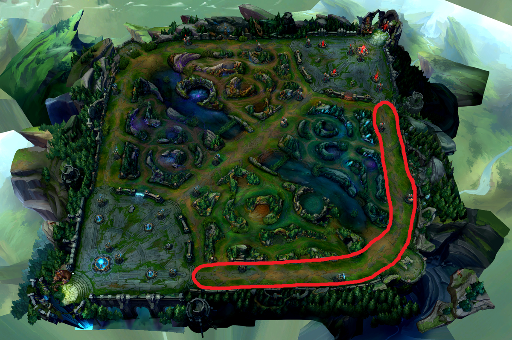

Die Bot Lane wird normalerweise von zwei Spielern besetzt: dem AD-Carry (Marksman) und dem Support. Der AD-Carry ist für hohen physischen Schaden im späten Spiel verantwortlich, während der Support das Team mit Heilungen, Schilden, Kontrollfähigkeiten oder Vision (Warding) unterstützt. Die Bot Lane ist oft der Fokus von frühen Teamkämpfen, da zwei Spieler gegen zwei antreten. Außerdem ist die Bot Lane strategisch wichtig, weil sie nahe an dem Drachen liegt, einem wichtigen neutralen Ziel. Gute Kommunikation zwischen AD-Carry und Support sowie Positionierung sind hier besonders entscheidend.
